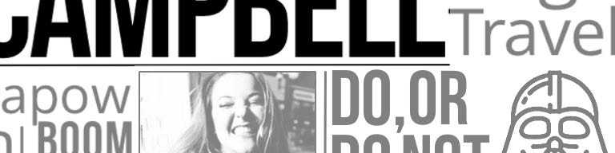
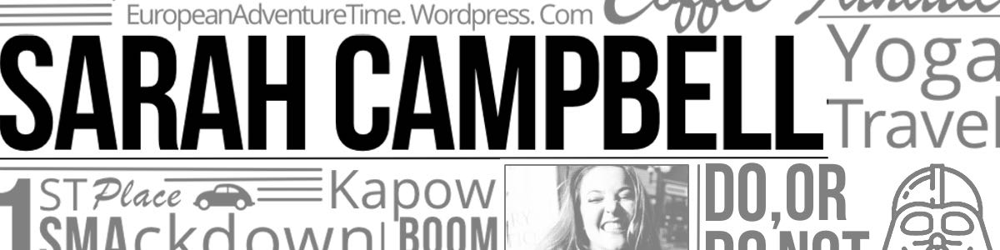
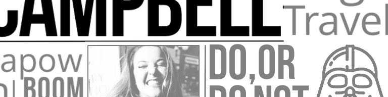
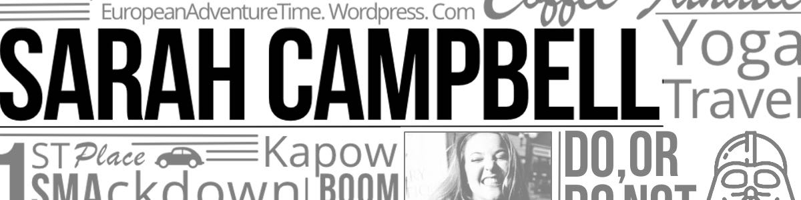
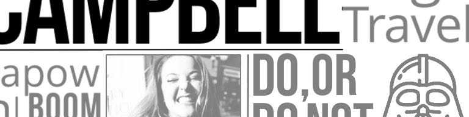
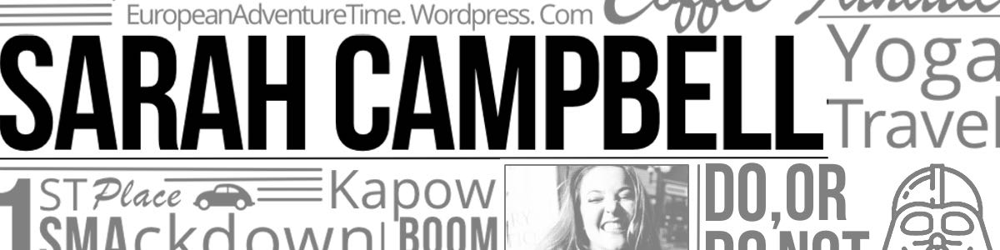

A spunky, bold and colourful brand that tells it like it is.

Slogan is “Sneeze Comfortably". Against a bubblegum pink background, a teenaged girl is seen from the waist down, wearing a period projects tampon t-shirt and a mini skirt. She has bare legs, socks and sneakers, her purse is an ice cream cone. Glitter, confetti and brightly coloured U by Kotex products sit beside her. The hashtag #RealTalk and the U by Kotex black box are prominent.
The radio spot would feature a woman sneezing then bleeped out as she swears, expresses dismay, and asks her friend for a tampon. Only as she begins to say "tampon" she’s bleeped out. Frustrated, she tried to say "pad" and is again bleeped. A narrator’s voice comes on, she asks: “since when is tampon a dirty word? Every girl has a period. It’s time to change the conversation, join the convo #RealTalk. U by Kotex, sneeze comfortably”.
The billboard image appear on Instagram, Twitter and Instagram feeds. Captions invite followers to share their own #RealTalk period moments online using the hashtag for a month, changing the conversation. Participants enter to win a PMS Pizza day trip to New York, and are featured in the next Period Projects video. Kotex would respond, offering opinions and support, pointing to their period calculator and peer information online. Leading to a new Period Projects video featuring funny real responses and voices.
The video would be positive and celebratory; wrapped up by a modern looking young woman summing up the Kotex view: why be discreet? Is it embarrassing or normal? Every girl has a #RealTalk moment. Before the Kotex brand, label and sound appears at the end, with the period projects hashtag. The video would be published on Youtube and the website, and shared across social media.
 


